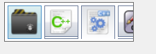

CTabImageDraw
class CTabImageDraw : public CStatic
,public ui_base
CTabImageDraw 是一個 類似CTabCtrl的 UI 不過其以一張位圖 表示項目 而非 文本

CTabImageDraw 使用 typedef std::deque<TABIMAGE_ITEM> container_t; 管理子項目
typedef struct _TABIMAGE_ITEM_
{
std::wstring text; //自定義文本
boost::shared_ptr<Gdiplus::Bitmap> image_ptr; //顯示的圖像
DWORD data; //自定義DWORD
_TABIMAGE_ITEM_()
{
data = 0;
}
_TABIMAGE_ITEM_(const _TABIMAGE_ITEM_& copy)
{
text = copy.text;
image_ptr = copy.image_ptr;
data = copy.data;
}
_TABIMAGE_ITEM_ operator=(const _TABIMAGE_ITEM_& copy)
{
text = copy.text;
image_ptr = copy.image_ptr;
data = copy.data;
return *this;
}
}TABIMAGE_ITEM,LTABIMAGE_ITEM;
主要接口
//設置背景
set_what
MFCUI_HOVER_INDEX //子項 高光背景
MFCUI_FOCUS_INDEX //... 選中
MFCUI_DEFAULT_INDEX //... 常規
MFCUI_STYLE_BACKGROUND //控件背景
//返回 子項容器 以便於 插入 刪除
inline container_t& get_container()
//調整狀態 在刪除 或 新增元素後 一改調用之
bool insert_revision(const UINT _where //插入位置索引
,const UINT count = 1 //插入了多少項
,const bool is_draw = true //如果需要重繪 是否自動重繪 (false 由用戶調用重繪函數)
);
bool erase_revision(const UINT _where //刪除位置索引
,const UINT count = 1 //刪除了多少項
,const bool is_draw = true //如果需要重繪 是否自動重繪 (false 由用戶調用重繪函數)
);
...
依賴
CTabImageDraw.h CTabImageDraw.cpp
ui_base.h ui_base.cpp
可選風格
MFCUI_STYLE_BACKGROUND //是否繪製 背景
MFCUI_STYLE_VERTICAL //是否 垂直排列元素